컴퓨터응용가공산업기사 (2008-09-07 기출문제)
1과목: 기계가공법 및 안전관리
1. CNC 선반가공용 프로그램에서 G96 S100 M03 ; 일 때 S100의 의미는?
- 회전당 이송량
- 원주속도 100 m/min으로 일정제어
- 분당 이송량
- 회전수 100 rpm으로 일정제어
(정답률: 56%)

2. 높은 정밀도를 요구하는 가공물,각종 지그, 정밀기계의 구멍가공 등에 사용하는 보링머신으로, 온도 변화에 따른 영향을 받지 않도록 항온 항습실에 설치해야 하는 것은?
- 코어보링머신
- 수직보링머신
- 수평보링머신
- 지그보링머신
(정답률: 73%)
3. 일반적으로 공구 연삭기로 연삭하는 절삭공구로 적합하지 않은 것은?
- 바이트
- 줄
- 드릴
- 밀링커터
(정답률: 72%)
4. 주철을 저속으로 절삭할 때 주로 나타나는 칩(chip)의 형태는?
- 전단형
- 열단형
- 유동형
- 균열형
(정답률: 33%)
5. 시준기와 망원경을 조합한 것으로 미소 각도를 측정할 수 있는 광학적 각도 측정기는?
- 베벨 각도기
- 오토 콜리메이터
- 광학식 각도기
- 광학식 클리노미터
(정답률: 60%)
6. 각도 측정기의 종류가 아닌 것은?
- 플러그 게이지
- 사인바
- 컴비네이션 세트
- 수준기
(정답률: 54%)
7. 밀링 가공에서 테이블의 이송 속도를 구하는 식은? (단, F는 테이블 이송속도(mm/min), fz는 커터 1개의 날당 이송(mm/tooth), Z는 커터의 날수, n은 커터의 회전수(rpm), fr은 커터 1회전당 이송(mm/rev)이다.)
- F = fz × Z × n
- F = fz × Z
- F = fr × fz
- F = fz × fr × n
(정답률: 86%)
8. 밀링머신의 부속장치가 아닌 것은?
- 슬로팅 장치
- 회전 테이블
- 래크 절삭장치
- 맨드릴
(정답률: 65%)
9. 드릴의 구멍뚫기 작업을 할 때 주의해야 할 사항이다. 틀린 것은?
- 드릴은 흔들리지 않게 정확하게 고정해야 한다.
- 장갑을 끼고 작업을 하지 않는다.
- 구멍뚫기가 끝날 무렵은 이송을 천천히 한다.
- 드릴이나 드릴 소켓 등을 뽑을 때에는 해머 등으로 두들겨 뽑는다.
(정답률: 89%)
10. 수작업으로 선재, 봉재 등에 수나사를 깍을 때 사용하는 공구는?
- 탭
- 다이스
- 스크레이퍼
- 커터
(정답률: 74%)
11. 브로치 절삭날 피치를 구하는 식은? (단, P = 피치, L = 절삭날의 길이, C는 가공물 재질에 따른 상수이다.)
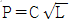
- P = C × L
- P = C × L2
- P = C2 × L
(정답률: 33%)
12. 밀링 머신 중 분할대나 헬리컬 절삭 장치를 사용하여 헬리컬 기어, 트위스트 드릴의 비틀림 흠 등의 가공에 가장 적합한 것은?
- 수직 밀링 머신
- 수평 밀링 머신
- 만능 밀링 머신
- 플레이너형 밀링 머신
(정답률: 60%)
13. 산화 알루미늄 분말을 주성분으로 하여 마그네슘, 규소 등의 산화물과 소량의 다른 원소를 첨가하여 소결한 절삭 공구 재료는?
- 고속도강
- 세라믹
- CBN 공구
- 초경합금
(정답률: 58%)
14. 기어 절삭법에 해당되지 않는 것은?
- 선반에 의한 절삭법
- 형판에 의한 절삭법
- 창성에 의한 절삭법
- 총형 공구에 의한 절삭법
(정답률: 78%)
15. 환봉을 황삭가공하는데 이송을 0.1mm/rev로 하려고 한다. 바이트의 노즈반경이 1.5mm라고 한다면 이론상의 최대 표면 거칠기는 얼마 정도가 되겠는가?
- 8.3×10-4mm
- 8.3×10-3mm
- 8.3×10-5mm
- 8.3×10-2mm
(정답률: 47%)
16. 선삭에서 테이퍼의 큰 지름을 D(mm), 작은 지름을 d(mm), 테이퍼 부분의 길이를 l(mm), 일감의 전체길이를 L(mm)이라 하면, 심압대의 편위량 e(mm)를 구하는 식으로 옳은 것은?
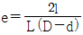
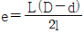
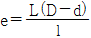
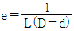
(정답률: 71%)
17. 숏 피닝(shot peening) 가공 조건에 중요한 영향을 미치지 않는 것은?
- 분사속도
- 분사각도
- 분사액
- 분사면적
(정답률: 50%)
18. 밀링 가공시 지켜야 할 안전 사항으로 틀린 것은?
- 전삭 가공 중 칩을 제거할 때에는 장갑 낀 손으로 제거한다.
- 가공물은 바른 자세에서 단단하게 고정한다.
- 가동 전에 각종 레버, 자동이송, 급송이송 등을 반드시 점검한다.
- 칩 커버를 설치한다.
(정답률: 93%)
19. 연삭숫돌의 결합도가 높은 것을 사용해야 하는 연삭작업은?
- 경도가 큰 가공물을 연삭할 경우
- 숫돌차의 원주 속도가 빠를 경우
- 접촉 면적이 작은 연삭작업일 경우
- 연삭깊이가 클 경우
(정답률: 37%)
20. 선반가공에서 작업자의 안전을 위해 칩을 인위적으로 짧게 끊어지도록 만드는 것은?
- 여유각
- 경사각
- 칩 브레이커
- 인선 반지름
(정답률: 91%)
2과목: 기계설계 및 기계재료
21. 알루미늄 합금으로 피스톤 잴에 사용되는 Y 합금의 성분을 바르게 표현한 것은?
- Al - Cu - Ni - Mg
- Al - Mg - Fe
- Al - Cu - Mo - Mn
- Al - Si - Mn - Mg
(정답률: 68%)
22. 다음 철광석 중에서 철읫 성분이 가장 많이 포함된 것은?
- 자철광
- 망간광
- 갈철광
- 능철광
(정답률: 74%)
23. 다음 중 연강이 사용되지 않는 것은?
- 볼트
- 리벳
- 파이프
- 게이지
(정답률: 56%)
24. 다음 중 내식성 알루미늄 합금이 아닌 것은?
- 알민(almin)
- 알드레이(aldrey)
- 엘린바(elinvar)
- 하이드로날륨(hydronalium)
(정답률: 41%)
25. 공구강의 구비조건을 설명한 것으로 틀린 것은?
- 내마모성이 작을 것
- 상온 및 고온 경도가 클 것
- 열처리 변형이 적을 것
- 인성이 커서 충격에 견딜 것
(정답률: 71%)
26. 일반적으로 탄소강의 청열 취성(blue shortness)이 나타나는 온도는?
- 50~150℃
- 200~200℃
- 400~500℃
- 600~700℃
(정답률: 56%)
27. 구리에 대한 설명으로 틀린 것은?
- 전기 및 열의 전도성이 우수하다.
- 전연성이 좋다 가공이 용이하다.
- 아름다운 광택과 귀금속적 성질이 우수하다.
- 결정 격자가 체심입방격자이며 변태점이 있다.
(정답률: 65%)
28. 다음 금속 중 결정 구조가 면심입방격자구조인 것은?
- 코발트(Co)
- 크롬(Cr)
- 몰리브덴(Mo)
- 알루미늄(Al)
(정답률: 56%)
29. 순철의 자기변태점은?
- A0
- A2
- A3
- A4
(정답률: 42%)
30. 구리에 5~20% Zn을 첨가한 것으로 전연성이 좋고 색깔도 아름답기 때문에 장식용 금속 잡화, 모조금 등에 사용되는 황동은?
- 네이벌 황동
- 양은
- 델타 메탈
- 톰백
(정답률: 88%)
31. 회전속도가 200rpm으로 7.35 kW를 전달하는 연강 중실축의 지름은 몇 mm 이상이어야 하는가? ( 단, 허용응력 r = 20.58N/mm2이고, 축은 비틀림 모멘트만을 받는다.)
- 44.3
- 49.1
- 54.7
- 59.8
(정답률: 17%)
32. 온도변화에 따라 배관에 열응력이 크게 발생하면 관과 부속장치의 변형 및 파손이 일어나는데, 이를 방지하기 위한 이음은?
- 신축 이음
- 리벳 이음
- 플랜지 이음
- 나사 이음
(정답률: 25%)
33. 하중을 작용방향과 작용시간 등에 따라 분류할 때, 작용방향에 따른 분류에 속하지 않는 것은?
- 압축하중
- 충격하중
- 인장하중
- 전단하중
(정답률: 45%)
34. 『비례한도 이내에서 응력과 변형률은 비례한다.』라는 법칙을 무엇이라 하는가?
- 오일러의 법칙
- 프아송의 법칙
- 아베의 법칙
- 후크의 법칙
(정답률: 45%)
35. 다음 그림과 같은 스프링장치에서 가가 스프링의 상수 K1 = 40 N/cm, K2 = 50 N/cm, K3 = 60 N/cm이다. 하중 방향의 처짐이 150mm일 때 작용하는 하중 P는 약 몇 N인가?
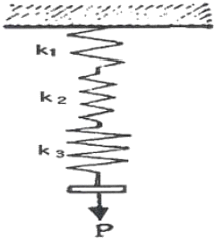
- 2250
- 964
- 389
- 243
(정답률: 30%)
36. 회전수 1500rpm, 축의 직경 110mm인 붇힘키를 설계하려고 한다. b(폭)×h(높이)×ℓ(길이) = 28mm×18mm×300mm일 때 묻힘키가 전달할 수 있는 최대 동력(kW)은? (단, 키의 허용전단응력 τa = 40N/mm2이며, 키의 허용전단응력만을 고려한다.)
- 933.⑤
- 1264.86
- 2902.83
- 3759.42
(정답률: 28%)
37. M20×2.5 나사가 유효지름이 18.396mm이고, 마찰계수가 0.1일 때 나사의 효율은?
- 약 37%
- 약 56%
- 약 27%
- 약 46%
(정답률: 39%)
38. 바로걸기 벨트의 경우 이완측을 위쪽에 오게 하는 가장 큰 이유는?
- 벨트 걸기가 쉬워진다.
- 벨트가 잘 벗겨지지 않는다.
- 미끄럼이 커진다.
- 접촉각이 커져, 전동 효율이 좋아진다.
(정답률: 62%)
39. 볼베어링에서 기본 베어링 수명이 L1일 때, 동일 조건하에 베어링에 가하는 하중을 2배로 하면, 이 때 베어링 수명(L2)은 어떻게 되는가?
- L2 = 2L1
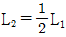
- L2 = 8L1
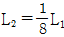
(정답률: 39%)
40. 지름 14mm의 연강봉에 8000N의 인장하중이 작용할 때 발생하는 응력은 몇 N/mm2인가?
- 15
- 23
- 46
- 52
(정답률: 45%)
3과목: 컴퓨터응용가공
41. 이미 정의된 2개의 곡선이나 2개의 곡면에 필렛(fillet) 처리하는 것을 무엇이라 하는가?
- blending
- sweeping
- lifting
- skinning
(정답률: 59%)
42. 서피스(surface)모델로 구현하기 어려운 작업은?
- 셰이딩(shading)
- NC 공구 경로 생성
- 부피 계산
- 도면 출도
(정답률: 71%)
43. B-spline 곡선을 정의하기 위해 필요하지 않은 입력 요소는?
- 곡선의 오더(order)
- 끝점에서의 접선(tangent) 벡터
- 조정점
- 절점(knot) 벡터
(정답률: 53%)
44. 베지어 곡선에서 조정점이 5개인 경우 곡선식의 차수(degree)는 몇 차인가?
- 3
- 4
- 5
- 6
(정답률: 68%)
45. 다음 그림에 나타난 직각 피라미드에서 면 ADE의 바깥 방향으로의 법선 벡터는?
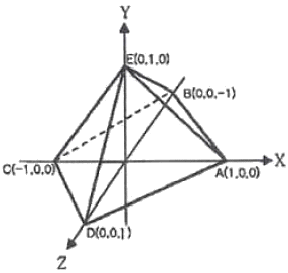
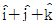
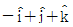
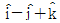
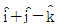
(정답률: 35%)
46. 좌표 (x, y)를 원점에 관하여 x축으로 Sx만큼, y축으로 Sy만큼 축소ㆍ확대시키는 행렬은?
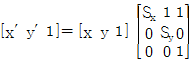
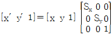
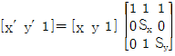
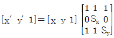
(정답률: 57%)
47. 물체를 화면에 표시할 때 데이터(data)가 화면 내부인지 외부인지를 판단하여 경계 밖의 것은 잘라내어 화면에 나타내지 않고 화면 내부의 것만 디스플레이하는 기능은?
- shearing(시어링)
- scaling(스케일링)
- zooming(줌잉)
- clipping(클리핑)
(정답률: 49%)
48. 3차원 물체를 homogeneous coordinates로 기술하면 일반적인 4×4 변환행렬로 정의된다. 다음 4×4 행렬 중 1×3 행렬이 나타내는 변환은?
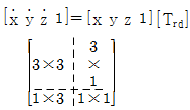
- scaling
- rotation
- perspective transformation
- translation
(정답률: 30%)
49. 형상은 같으나 치수가 다른 도형 등을 작성할 때 가변되는 기본 도형을 작성하여 놓고 필요에 따라 치수를 입력하여 비례되는 도형을 작성하는 옵션기능은?
- Offset(옵셋)/Parallel(평행) 기능
- 비도형 정보처리 기능
- 파트(part) 모델링 기능
- 파라메트릭 모델링 기능
(정답률: 59%)
50. CAD 시스템의 입력 장치가 아닌 것은?
- 트랙 볼(track ball)
- 플로터(plotter)
- 스캐너(scanner)
- 라이트 펜(light pen)
(정답률: 63%)
51. 솔리드모델링의 B-Rep 표현 중 루프(loop)라는 용어에 관하여 올바르게 서술한 것은?
- 하나의 모서리를 두 개의 다른 방향의 모서리로 쪼개어 놓은 것
- 모든 면에 대하여 이들을 내부와 외부로 경계 짓는 모서리들이 연결된 닫혀진 회로(closed circuit)
- 면과 면이 연결되어 공간상에서 하나의 닫혀진 면의 고리를 이룬 것
- 면과 면이 연결되어 공간상에서 하나의 닫혀진 입체를 이룬 것
(정답률: 60%)
52. NC DATA를 생성하기 전에 생성된 CL DATA를 이용하여 공구의 위치, 과절삭, 미절삭 등을 확인하는 과정은?
- 후처리
- CL DATA 생성
- 공구경로 검증
- 전처리
(정답률: 66%)
53. DXF 파일을 구성하는 구조에 해당되지 않는 것은?
- 헤더 섹션(Header Section)
- 미드 섹션(Mid Section)
- 테이블 섹션(Tables Section)
- 블록 섹션(Blocks Section)
(정답률: 39%)
54. 솔리드(solid) 모델링의 설명으로 틀린 것은?
- 은선 제거 및 단면도 작성이 불가능하다.
- 부피, 관성모멘트를 계산할 수 있다.
- 중량해석, 유한요소해석을 할 수 있다.
- 조립체 설계시 위치, 간섭 등의 검토가 가능하다.
(정답률: 82%)
55. Bezier 곡면의 특징이 아닌 것은?
- 곡면을 부분적으로 수정할 수 있다.
- 곡면의 끝과 끝 조정점이 일치한다.
- 곡면이 조정점들의 블록포(convex hull) 내부에 포함된다.
- 곡면이 조정점의 일반적인 형상을 따른다.
(정답률: 48%)
56. 여러 대의 NC 공작기계를 한 대의 컴퓨터로 연결하여 제어하는 시스템은?
- NC
- CNC
- DNC
- FMS
(정답률: 82%)
57. 머시닝센터에서 3차원 곡면을 정삭 가공하고자 할 때 가장 많이 사용되는 공구는?
- 플랫 엔드밀(flat endmill)
- 페이스 커터(face cutter)
- 필렛 엔드밀(fillet endmill)
- 볼 엔드밀(ball endmill)
(정답률: 79%)
58. CSG(Constructive Solid Geometry)에 관한 내용이다. 잘못된 것은?
- CSG는 이해하기 쉽고 사용자와의 인터페이스 유효성(validity) 검사가 쉽다.
- CSG는 특정 규칙에 의해 기본적인 형상들을 조합함으로써 실제 물체를 생성해 간다.
- CSG 모델은 면, 모서리, 꼭지점과 같은 경계요소들의 집합으로 표현된다.
- CSG에서 가장 보편적인 기본형상은 블록, 원통, 구이다.
(정답률: 38%)
59. 널리 사용되는 원추 단면 곡선에는 원, 타원, 포물선 및 쌍곡선 등이 있다. 포물선을 음함수 형태로 표시한 식은?
- x2 + y2 - r2 = 0
- y2 - 4ax = 0
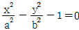
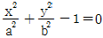
(정답률: 26%)
60. CAD/CAM 시스템간 상호 데이터 교환이 가능하도록 하는 데이터의 표준이 아닌 것은?
- DWG
- IGES
- DXF
- STEP
(정답률: 70%)
4과목: 기계제도 및 CNC공작법
61. 물체의 한쪽면이 경사되어 평면도나 측면도로는 물체의 형상을 나타내기 어려울 경우 가장 적합한 투상법은?
- 요점 투상법
- 국부 투상법
- 부분 투상법
- 보조 투상법
(정답률: 55%)
62. 호칭이 63⑤인 볼베어링에서 ⑤는 무엇을 나타내는가?
- 베어링 폭
- 기본 부하용량
- 베어링 안지름
- 베어링 바깥지름
(정답률: 78%)
63. 일반적으로 해칭선을 그릴 때 사용하는 선의 명칭은?
- 굵은 2점 쇄선
- 굵은 1점 쇄선
- 가는 실선
- 가는 1점 쇄선
(정답률: 74%)
64. 치수 보조기호 중 구(球:sphere)의 지름 기호는?
- R
- SR
- ø
- Sø
(정답률: 76%)
65. 보기와 같은 입체도를 화살표 방향에서 본 투상도로 가장 적합한 것은?
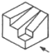
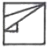
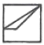
(정답률: 86%)
66. 보기와 같이 도면에 나사 표시가 Tr10 × 2로 표시되어 있을 때 올바른 해독은?
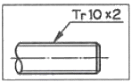
- 볼나사 호칭 지름 10인치
- 둥근나사 호칭 지름 10mm
- 미터 사다리꼴 나사 호칭 지름 10mm
- 자동차 타이어 밸브나사 호칭 지름 10mm
(정답률: 85%)
67. 평행 핀(KS B 1320)에 대한 호칭 방법으로서 올바르게 표시된 것은? (단, 비경화강 평행 핀, 호칭 지름 6mm, 공차 m6, 호칭 길이 30mm이다.)
- 평행 핀 - 6m6 × 30 - St
- 6m6 × 30 - St - 평행 핀
- 평행 핀 - St - 6m6 × 30
- 6m6 × 30 -평행 핀 - St
(정답률: 48%)
68. 보기와 같이 가공에 의한 줄무늬 방향이 기입면의 중심에 대하여 동심원 모양일 때 표면결의 기호를 나타낸 것은?
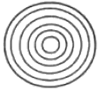
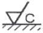
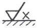
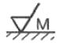
(정답률: 66%)
69. ø60 ± 0.015인 구멍의 최대 허용치수는?
- 59.85
- 59.985
- 60.15
- 60.015
(정답률: 67%)
70. 다음 중 H7 구멍과 가장 헐겁게 끼워지는 축의 공차는?
- f6
- h6
- k6
- g6
(정답률: 62%)
71. 머시닝센터에서 그림과 같은 윤곽가공을 하기 위해 보정을 하면서 접근하고자 한다. ①→②점에 대한 명령으로 알맞은 것은? (단, 커터의 보정량은 D02에 기억되어 있다.)
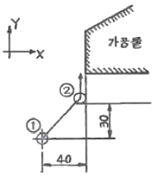
- G91 G00 G41 X40.0 Y30.0 D02;
- G91 G00 G42 X40.0 Y30.0 D02;
- G91 G01 G40 X40.0 Y30.0 D02;
- G91 G01 G42 X40.0 Y30.0 D02;
(정답률: 43%)
72. 다음 CNC선반의 ISO 인서트 팁(insert tip) 규격에서 밑줄 친 08의 의미는?
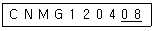
- 인서트 팁 형상
- 절삭 날 길이
- 노즈 반지름
- 칩 브레이커의 형상
(정답률: 57%)
73. CNC 공작기계의 준비기능에 대한 설명으로 옳은 것은?
- 한 개의 지령절에는 그룹이 다를 경우 몇 개라도 사용할 수 있다.
- CNC선반과 머시닝센터의 준비기능은 모두 같다.
- 한 개의 지령절에 동일 그룹의 준비기능을 2개까지만 사용할 수 있다.
- ○○ 그룹은 연속 유효지령이다.
(정답률: 54%)
74. CNC 공작기계의 기본적인 제어방식이 아닌 것은?
- 위치 결정 제어
- 윤곽 절삭 제어
- 직선 절삭 제어
- 자동 절삭 제어
(정답률: 64%)
75. 머시닝센터에서 A에서 B로 원호가공을 하기 위한 프로그램으로 맞는 것은?
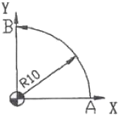
- G91 G03 X-10.0 Y10.0 J-10.0 F100 ;
- G91 G03 X-10.0 Y10.0 J10.0 F100 ;
- G91 G03 X-10.0 Y10.0 I-10.0 F100 ;
- G91 G03 X-10.0 Y10.0 I10.0 F100 ;
(정답률: 48%)
76. CNC 공작기계에서 각 축의 이송 정밀도를 높이기 위하여 사용하는 나사는?
- 삼각 나사
- 사각 나사
- 둥근 나사
- 볼 나사
(정답률: 76%)
77. 보기와 같은 CNC선반의 복합형 고정사이클 프로그램에서 Q100의 의미는?
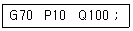
- 정삭가공 지령절의 첫번째 전개번호
- 정삭가공 지령절의 마지막 전개번호
- 황삭가공 지령절의 첫번째 전개번호
- 황삭가공 지령절의 마지막 전개번호
(정답률: 32%)
78. CNC 공작기계의 일상점검 내용 중 매일 점검사항이 아닌 것은?
- 외관 점검
- 유량 점검
- 기계정도 점검
- 압력 점검
(정답률: 70%)
79. CNC선반에서 지령치 X75.0으로 프로그램하여 외경을 가공한 후 측정한 결과 ø74.92이었다. 기존의 X축 보정값이 0.0⑤라 하면 보정값을 얼마로 수정해야 하는가? (단, 직경 지령 사용)
- 0.085
- 0.045
- 0.85
- 0.45
(정답률: 69%)
80. CNC선반에서 절삭속도를 30m/min로 일정하게 유지하려고 할 때, 공작물의 직경이 20mm인 경우 주축 회전수는 약 몇 rpm인가?
- 477.5
- 485.5
- 495.5
- 5⑤.5
(정답률: 54%)